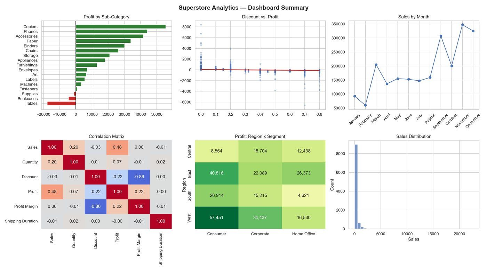
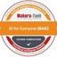
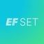

I make messy spreadsheets tell the truth.
Mohamed Atia — Data Analyst trainee with an accounting foundation. I clean, model, and visualize business data in Python, SQL, Power BI, and Tableau, so the numbers point straight to a decision.
I help small businesses and teams turn raw, messy data into decisions they can trust — through Python/SQL data cleaning, statistical analysis, and Power BI/Tableau dashboards.
B1About
I'm an accounting graduate from Alexandria University, now training as a Data Analyst through Egypt's Digital Egypt Pioneers Initiative (DEPI), Round 5, under the Ministry of Communications and Information Technology.
Before I moved into data, I spent four years learning how a business actually works — how revenue gets recognized, where costs hide, and why a balance sheet has to balance. That's the part most analysts skip, and it's the part that makes my analysis useful: I don't just build a dashboard, I understand what the numbers inside it mean for the business behind them.
Today that shows up as Python and SQL for cleaning and modeling data, Power BI and Tableau for turning it into something a non-technical stakeholder can act on in five minutes, not fifty.
Good analysis doesn't start with a chart. It starts with a question worth answering.
B2Skills & tools
Programming & analytics
Python, Pandas, SQL, exploratory data analysis, statistical analysis, data cleaning, feature engineering
BI & visualization
Microsoft Power BI (Power Query, DAX, data modeling), Tableau, data storytelling, KPI reporting
Data engineering
SQL joins, common table expressions, stored procedures, views, database design
Business & AI
Accounting, financial reporting, data governance, generative AI, large language models (LLMs), prompt engineering
Tools & platforms
Git, GitHub, Jupyter Notebook, Microsoft Excel, Microsoft 365, Google Sheets
B3Work experience
Data Analyst Trainee — DEPI Round 5
Jul 2026 – PresentMinistry of Communications and Information Technology, in partnership with Skills Dynamix · Hybrid, Alexandria
- Selected for a national scholarship and professional training track in data analytics.
- Building Python skills for data analysis, including Pandas, data cleaning, EDA, and object-oriented programming.
- Building SQL skills across joins, CTEs, stored procedures, views, and database design.
- Building interactive dashboards and data stories in Tableau and Power BI, including Power Query, data modeling, and DAX.
- Completing six graded mini-projects plus an end-to-end capstone with an executive presentation.
Internship Trainee — CIB Summer Internship Program
Sep – Nov 2024Commercial International Bank (CIB) · Remote
- Completed a structured banking internship spanning five modules: banking operations, ESG, financial literacy, entrepreneurship, and digital transformation.
- Practiced professional workplace communication and active listening while engaging with data-driven business contexts.
B4What I offer
Data cleaning & pipelines
Python · PandasMessy spreadsheets, inconsistent formats, missing values, duplicate rows. I build reusable pipelines that clean your data once and keep it clean, with proper handling for the edge cases that break a one-off script.
Dashboards & reporting
Power BI · TableauDashboards that surface the numbers that actually matter to your business, plus automated KPI reporting so you're not rebuilding the same report by hand every month.
Analysis & insight
SQL · StatisticsAnswering a specific business question, not just describing your data: what's driving profitability, where the trend is heading, and what to do next.
B5Featured project
Superstore Retail Analytics
An end-to-end Python pipeline that turned 9,994 raw retail transactions into $284K in identified profit drivers and a pricing recommendation for three loss-making sub-categories.

The challenge
The Sample Superstore dataset arrived with missing values, duplicate rows, inconsistent formatting, and no engineered features — just raw transactions with no clear story yet.
What I built
A chainable OOP pipeline (SuperstoreCleaner, FeatureEngineer) with custom exception handling — cleaning, IQR outlier detection, memory optimization, and engineered fields like Profit Margin and Discount Bucket — followed by correlation and significance testing with scipy.stats.
The result
Discount and profit are significantly negatively correlated (r = -0.22); Tables, Bookcases, and Supplies account for most of the profit loss; West/Consumer is the strongest region-segment pair at $57K profit. Delivered as 11 visualizations, a dashboard, and an automated KPI report via a custom KPIReportGenerator class.
B6Achievements & certifications

McKinsey Forward Program
EF SET C1 English, EF SETFull list of credentials and certificates on LinkedIn, with badges verified on Credly.
B7Testimonials
This section is still empty — on purpose.
I'd rather leave it blank than fill it with something that isn't real. If we work together, I'll ask if you're willing to leave a few lines here.
B8Let's work together
If you need a data set turned into an actual answer, or a dashboard built and kept up to date, send me a message — I usually reply within a day.
=SUM( your data , my analysis ) → a decision you can trust
- Emailbeshny2003@gmail.com
- Phone+20 105 094 8781
- LocationAlexandria, Egypt
- LinkedInlinkedin.com/in/bishnie
- GitHubgithub.com/bshni
- CertificationsLinkedIn
- Credlycredly.com/users/mohamed-ahmed